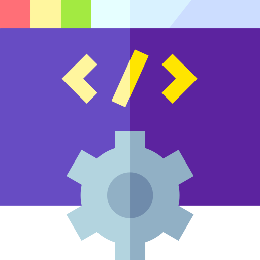

Bienvenidos al Repositorio de Apuntes
Desarrollo de Interfaces (DI)
Aprende los principios de diseño de interfaces de usuario, accesibilidad y usabilidad para aplicaciones modernas.
Ver Apuntes

Desarrollo Web en Entorno Cliente (DWEC)
Domina las tecnologías web del lado cliente como HTML, CSS y JavaScript para crear aplicaciones dinámicas.
Ver Apuntes